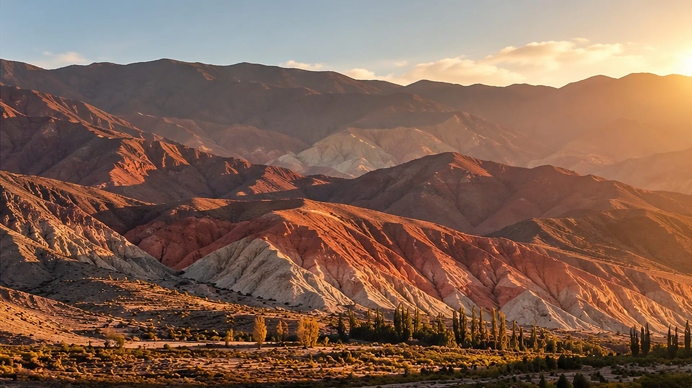
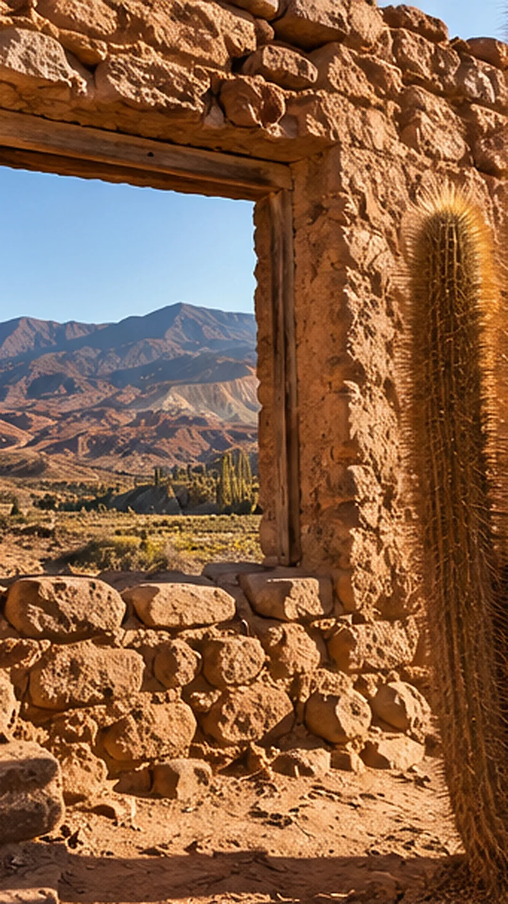
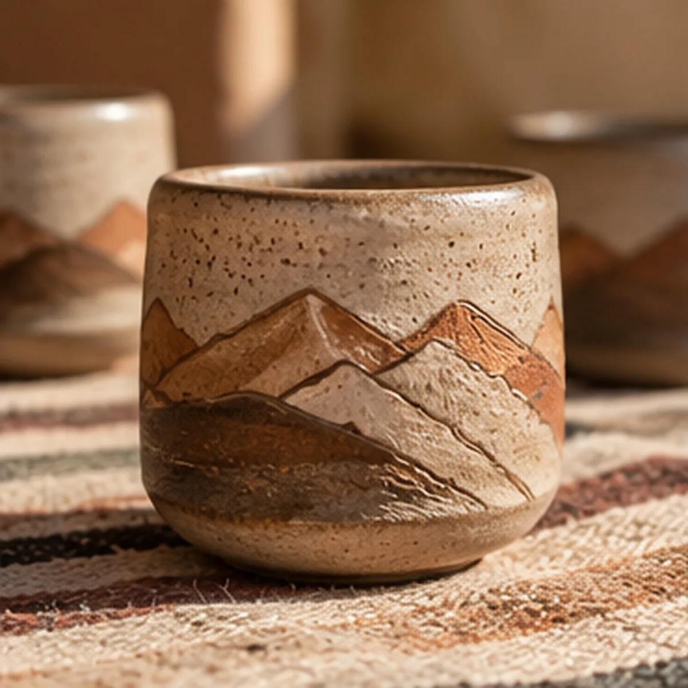
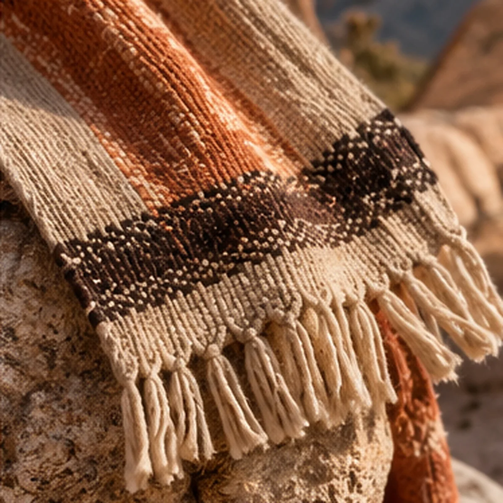
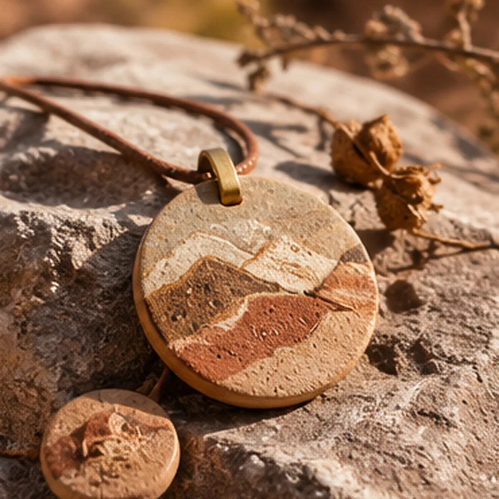
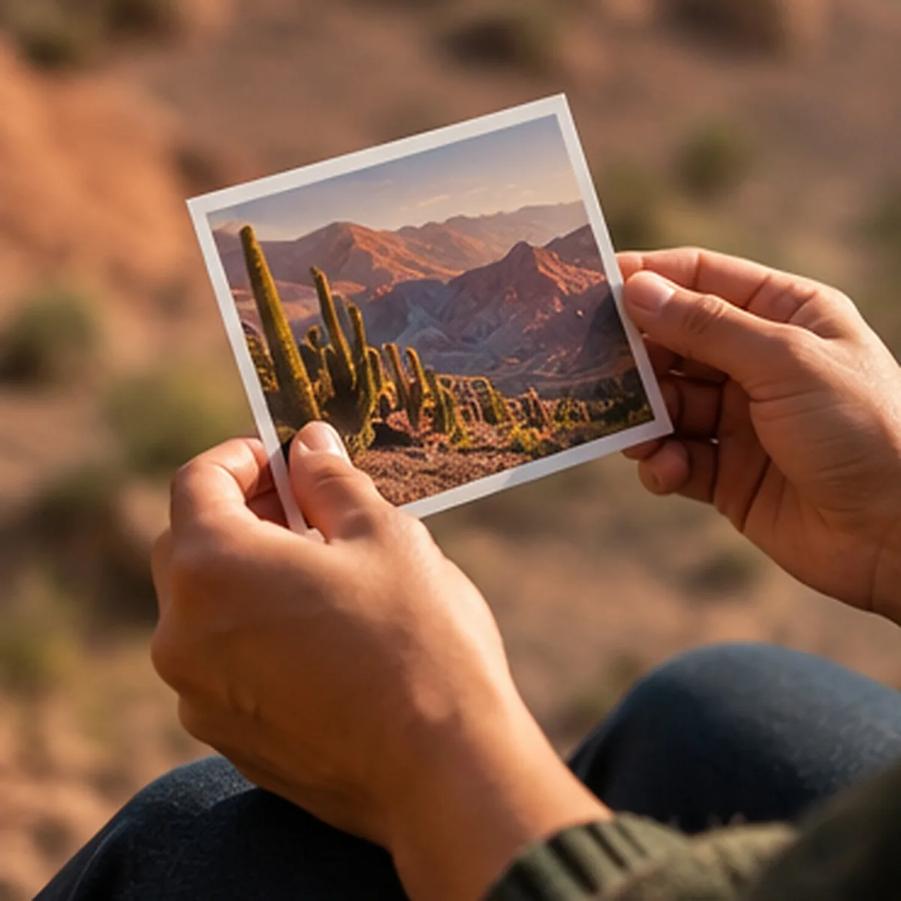

Territorios
Un atlas de paisajes, memoria y objetos, territorio por territorio
Cada territorio tiene su lámina: su paisaje, su relato, su paleta de tierras y su colección. El atlas empieza en el noroeste y está pensado para seguir creciendo.

Territorio 01Catamarca
- Región
- Noroeste argentino
- Paisaje
- Valles, cerros de colores y puna
- Paleta
- Ocres, terracotas, verdes y minerales
- Colección
- Cerámica, textil, piedra y fotografía
- Estado
- En curso
Una tierra de cerros que cambian de color con la luz, de casas de adobe y de cardones que marcan el paisaje. De ahí toman su forma y su paleta las piezas de la colección.
Adobe, cardones y cerros de colores
En los valles del noroeste, las casas se levantan con la misma tierra que las rodea. El adobe guarda el calor del día y el color del cerro; los cardones, que crecen despacio, acompañan el paisaje desde hace siglos.
Ese es el punto de partida de la colección: mirar el paisaje de cerca y quedarse con lo que no siempre se ve. Las texturas, los tonos y las historias de quienes lo habitan.
Este relato, con sus fotografías y contenidos, es lo que se abre al escanear el QR de cada objeto de la colección.

La paleta del territorio
Los tonos que la colección toma de la tierra catamarqueña.
- Ocre#B07A2A
- Terracota#9A4A2A
- Arcilla#C49A6C
- Jarilla#5F6B3A
- Mineral#56626A
- Cal#F0E0AF
La colección Catamarca
Cuatro líneas de objetos. Cada pieza viaja con su código QR.
-

Lámina 03 Cerámica Cerámica de tierra
Vasos y piezas de barro con los perfiles de los cerros pintados en tonos de la región.
-

Lámina 04 Textil Textiles andinos
Tejidos en tonos de tierra, con las franjas y los flecos del telar.
-

Lámina 05 Piedra Objetos de contemplación
Piedras y minerales trabajados como pequeñas láminas del paisaje, para tener cerca.
-

Lámina 06 Fotografía Fotografía e historias
Imágenes del territorio, acompañadas por el relato del lugar donde fueron tomadas.
Próximo territorio
El atlas está pensado para crecer: cada territorio que se suma tiene su lámina, su relato, su paleta y su colección. Si representás a un municipio, un organismo o una institución, podemos pensarlo juntos.
¿Tu territorio tiene una historia para contar?
Atlas en curso Territorios Invisibles de Argentina